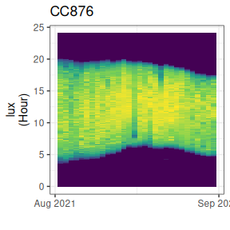
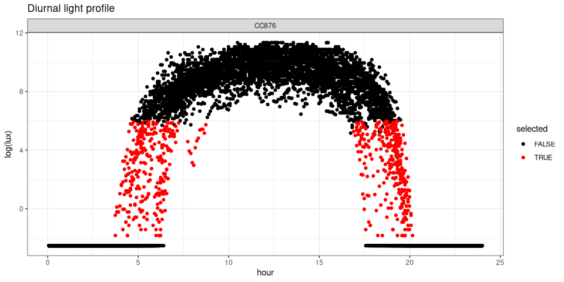
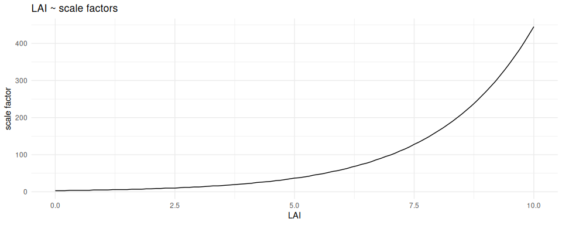

Optimization tips
achieving robust location estimates
Koen Hufkens
Source:vignettes/skytrackr_optimization.Rmd
skytrackr_optimization.Rmd1 Introduction
Geolocation by light is as much an art as it is a science, as certain decisions in your data workflow will affect the accuracy of your location estimates. It is therefore key to understand which decisions to be mindful of during your workflow. Below I’ll briefly touch upon some of these aspects.
2 Pre-processing
Before you start an estimation location there are a number of steps you can undertake to maximize the quality of your results.
2.1 Data quality
Invariably the quality of your location estimates will depend on the quality of your input (logger) data. This means that poor quality data (due to false twilights or nest visits during the day) will negatively affect a location estimate’s accuracy. To remove the most common sources of error the stk_screen_twl() function is included. Eliminating poor quality days will improve location estimates as there is a temporal dependency between the current estimate and the previous one.
To inspect data quality you can visualize the full light profile by using the stk_profile() function.
# an overview profile
cc876 |> stk_profile()
You can also use the stk_filter(), used to flag and filter the data to process using the range parameter, with the plot parameter set to TRUE. This returns a plot of the selected data as well as the annotated dataset.
# an overview profile
cc876 |> stk_filter(range = c(0.09, 400), plot = TRUE)
#> → Smoothing the data using a Hampel filter[outliers will be replaced with interpolated values]
#> # A tibble: 8,638 × 8
#> # Groups: logger, date [30]
#> logger date_time date hour measurement value outlier
#> <chr> <dttm> <date> <dbl> <chr> <dbl> <lgl>
#> 1 CC876 2021-08-02 00:09:10 2021-08-02 0.153 lux 0.08 FALSE
#> 2 CC876 2021-08-02 00:14:10 2021-08-02 0.236 lux 0.08 FALSE
#> 3 CC876 2021-08-02 00:19:10 2021-08-02 0.319 lux 0.08 FALSE
#> 4 CC876 2021-08-02 00:24:10 2021-08-02 0.403 lux 0.08 FALSE
#> 5 CC876 2021-08-02 00:29:10 2021-08-02 0.486 lux 0.08 FALSE
#> 6 CC876 2021-08-02 00:34:10 2021-08-02 0.569 lux 0.08 FALSE
#> 7 CC876 2021-08-02 00:39:10 2021-08-02 0.653 lux 0.08 FALSE
#> 8 CC876 2021-08-02 00:44:10 2021-08-02 0.736 lux 0.08 FALSE
#> 9 CC876 2021-08-02 00:49:10 2021-08-02 0.819 lux 0.08 FALSE
#> 10 CC876 2021-08-02 00:54:10 2021-08-02 0.903 lux 0.08 FALSE
#> # ℹ 8,628 more rows
#> # ℹ 1 more variable: selected <lgl>2.2 Data frequency
Unlike a purely twilight based approach to location estimates the {skytrackr} package uses all, or part of, the measured diurnal light cycle. By adjusting the range parameter you can include more or less data. Depending on the quality of the data including more data, outside the strict twilight range can be beneficial. You can explore the influence of your range parameter using the stk_filter() function (see above).
Including more data will increase the required computational power, i.e. time, for a good estimate. It is also important to note that some loggers (e.g. those by the Swiss ornithological society) do not register a full diurnal profile. In short, always inspect a daily light profile to establish if a full diurnal cycle is recorded, to exclude any baseline and saturated values (i.e. fill values), and assess the quality (noise) of the data.
2.3 The scale parameter
The scale parameter sets the light loss of the sky illuminance in the skylight model using the sky condition parameter in order to account for environmental conditions. This parameter is estimated during optimization, but at times competes with the estimated latitude parameter (depending on the optimization setup and used data). This parameter therefore needs to be chosen carefully, to allow for enough flexibility to account for environmental factors.
These environmental factors take several forms. For an unobstructed sky view the scale parameters (sky condition) varies between values of one (1) for a clear sky, to 3 for an average sky (30% cloud cover) to ten (10) for a dense dark cloudy sky (uncommon). However, if an individual spends a lot of time in vegetation illuminance values can be lower as the environment further attenuates the ambient light conditions. Should a sensor be covered by additional feathers or fur the registered values might be lower still.
2.3.1 Light loss theory
Light loss can be described as:
light loss = \(Q_{F}(sky condition, LAI)\) + \(f_{sensor}(sky condition, coverage)\) + \(\epsilon\)
Where both \(Q_{F}()\) and \(f_{sensor}(coverage)\) are dependent on the initial sky conditions in their own right. During optimization the upper bound of the scale should however not be a mere guess. Depending on the behaviour of the individual a physics informed constraint can be used.
Where light loss through a canopy is described according to the Beer–Lambert Law.
\(Q_F\) = \(Q_0 e^{–kF}\)
Where \(Q_{F}\) is the light level for a given level F, with k dependent on the canopy complexity (where literature often cites a value of 0.5 as a good middle ground). Maximum F is determined by the density of the vegetation or Leaf Area Index (LAI, dimensionless), expressed as leaves (\(m^2\)) per surface area (\(m^2\)). LAI reach a maximum of 10 for certain dense needleleaf forests, but are generally far lower.
Assuming a k of 0.5 and a maximum LAI of 6 (a reasonable maximum for broadleaf forests) we get a light loss relative to the original solar illuminance of about 5%. We can map the sky condition parameter to LAI (using an average sky as a reference). This inverse mapping allows us to estimate the vegetation density in which an individual (bird) is located (assuming an average sky and limited sensor losses). Turning this around, if you know the ecology of an individual you can then use this relationship to set the upper scale factor, under ideal conditions. The below graph shows the relationship between the scale factor and LAI for an average sky (sky conditions of 3 in the {skylight} model). Working on the assumption that most dense vegetation have a LAI of four to six, one can expect the scale factor to rarely exceed 50 unless other factors are at play.
# calculate the attenuation Beer-Lambert for LAI
lai_range <- seq(0, 10, by = 0.1)
lai_att <- 100 - (exp(-0.5 * lai_range) * 100)
# set the range of scale factors
scale_factor <- seq(1, 2000, by = 1)
# calculate "sky condition" based attenuation values
sky_att <- lapply(scale_factor, function(i){
ideal <- skylight::skylight(
date = as.POSIXct("2022-01-01 12:00:00"),
latitude = 0,
longitude = 0,
sky_condition = 3
)$sun_illuminance
c <- skylight::skylight(
date = as.POSIXct("2022-01-01 12:00:00"),
latitude = 0,
longitude = 0,
sky_condition = i
)$sun_illuminance / ideal
c <- c * 100
c <- ifelse(c > 100, NA, c)
c <- 100 - c
}) |> unlist()
lai_scale_factor <- lapply(lai_att, function(a){
scale_factor[which.min(abs(sky_att - a))]
}) |> unlist()
ggplot2::ggplot() +
ggplot2::geom_line(
aes(
lai_range,
lai_scale_factor
)
) +
ggplot2::labs(
title = "LAI ~ scale factors",
x = "LAI",
y = "scale factor"
) +
ggplot2::theme_minimal()
2.3.2 Estimating the scale from data
Working on the assumption that the sensor is correctly installed and the sensor error is minimal we can estimate the light loss from the data itself if a full diurnal profile is measured. Here, the difference between the maximum solar illuminance at noon can be compared with the measured maximum daily values. These values should give a crude estimate of the total light loss (without a need for attribution to vegetation, sky or other environmental conditions). Generally, Migrate Technology Ltd. sensors track close to true physical values. The included function stk_calibrate() returns the 90th quantile of the estimated daily scale factors across the data, which can then be used as upper value to the scale parameter in skytrackr().
2.4 Optimization iterations
There is also a trade-off between the amount of data used in a location estimate and the number of iterations used during optimization. If your data quality, and or frequency, is low it is advised to increase the number of optimization iterations. For high quality data 3000 iterations generally yields good results, but increasing this number to 6000 might provide a more robust estimate in some cases. It is advised to inspect the performance of the routine on a single logger, before proceeding to (batch) process all data. Iteration values in excess of 10K should generally not be required.
2.5 Step-selection dynamics
The step-selection function constrains the validity of a proposed location estimate. However, the function used is approximate only. It must also be noted that while an individual might move a long distance across a day (in absolute sense), its position from day-to-day might not move much (e.g. in the most extreme case, there is no day-to-day movement if the individual returns to a nesting location). The step-selection function should reflect short-distance ranging movements (i.e. rapid decay) rather than long-distance migration movements.
3 Post-processing
After estimating locations you can inspect the location estimation data using the stk_map() function. This will give you an initial idea on the accuracy of the estimates. The spread of the uncertainty on both longitude and latitude parameters can help determine the quality of the estimated locations. If available, a Gelman-Rubin Diagnostic (or grd value) is returned in the data output. Gelman-Rubin Diagnostic values < 1.05 are generally considered showing convergence of the parameter (location) estimates.